Film grain is strongest in the midtones and vanishes in the blacks and
the blown highlights. These are still plates — they cannot know what is underneath
them. The Overlay blend mode supplies that for them, and the maths is below.
Everything that is supposed to show grain on this page is a 100% crop.
Grain is a one-to-five pixel structure; shrink the frame to fit a web page and it
averages away to nothing, so a reduced screenshot of a grain plate is a picture of
an invisible product. The whole-frame panels further down are labelled as reduced.
Where the grain goes, and where it does not
Overlay is
out = 2·L·p below mid grey and
out = 1 − 2(1−L)(1−p) above it. Differentiate with
respect to the plate value p and you get
2·min(L, 1−L): full strength at mid grey, nothing at pure
black and pure white. No mask, no keyframe.
1.0%worst gap between the measured grain and the
prediction, anywhere above the 8-bit quantisation floor
0code values out of 255 that a perfectly flat
code-128 plate shifts the picture by
188assertions passed, all measured on the
written PNGs rather than on the generator's memory
Each plate over a black-to-white ramp at 100%. The grain fades out at
both ends by itself, and the table underneath is the measurement, not the claim.
This figure is scaled down to fit the page — open it to see the strips
at their own size.
This figure is scaled down to fit the page — open it to see
the eight plates at their own size. Measured autocorrelation radius 1.20 px fine, 2.45 px
medium, 4.80 px coarse — coarse really is 4.0× the size of
fine, so the three are different plates rather than three names for one
texture.
Grain Fine 01
35mm-scale grain. Reads as texture rather than as noise; survives compression better than the coarse plates do. Measured sigma 8.01, grain radius 1.20 px, single channel, pure luminance.
Both crops below are cut at this page's own width and never resized, so you are
looking at the real pixels.
no overlay · 100%
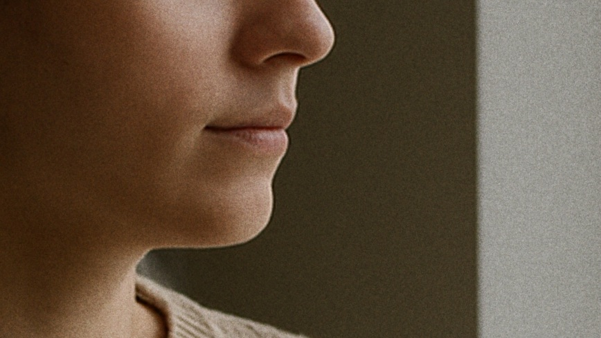
Grain Fine 01 · Overlay · 100%
Grain Fine 02
35mm-scale grain. Reads as texture rather than as noise; survives compression better than the coarse plates do. Measured sigma 8.01, grain radius 1.20 px, single channel, pure luminance.
Both crops below are cut at this page's own width and never resized, so you are
looking at the real pixels.
no overlay · 100%Grain Fine 02 · Overlay · 100%
Grain Medium 01
The default. Clearly visible at 100% without taking over the picture. Measured sigma 10.00, grain radius 2.45 px, single channel, pure luminance.
Both crops below are cut at this page's own width and never resized, so you are
looking at the real pixels.
no overlay · 100%Grain Medium 01 · Overlay · 100%
Grain Medium 02
The default. Clearly visible at 100% without taking over the picture. Measured sigma 10.00, grain radius 2.46 px, single channel, pure luminance.
Both crops below are cut at this page's own width and never resized, so you are
looking at the real pixels.
no overlay · 100%Grain Medium 02 · Overlay · 100%
Grain Coarse 01
16mm-scale grain. Obvious, and meant to be. Measured sigma 12.00, grain radius 4.83 px, single channel, pure luminance.
Both crops below are cut at this page's own width and never resized, so you are
looking at the real pixels.
no overlay · 100%
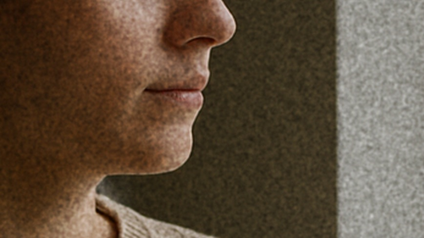
Grain Coarse 01 · Overlay · 100%
Grain Coarse 02
16mm-scale grain. Obvious, and meant to be. Measured sigma 12.00, grain radius 4.78 px, single channel, pure luminance.
Both crops below are cut at this page's own width and never resized, so you are
looking at the real pixels.
no overlay · 100%
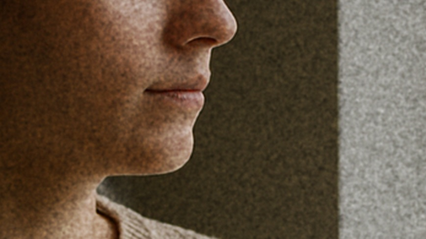
Grain Coarse 02 · Overlay · 100%
Grain Chroma Medium
Independent noise in each channel, so the grain carries colour. Reads as older colour stock, or as a camera pushed too far. Measured sigma 9.45, grain radius 2.49 px, inter-channel r 0.906, so the colour fluctuation rides on a shared luminance one.
Both crops below are cut at this page's own width and never resized, so you are
looking at the real pixels.
no overlay · 100%
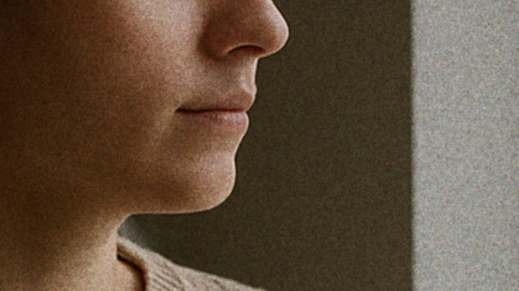
Grain Chroma Medium · Overlay · 100%
Grain Chroma Coarse
Independent noise in each channel, so the grain carries colour. Reads as older colour stock, or as a camera pushed too far. Measured sigma 11.55, grain radius 4.85 px, inter-channel r 0.906, so the colour fluctuation rides on a shared luminance one.
Both crops below are cut at this page's own width and never resized, so you are
looking at the real pixels.
no overlay · 100%
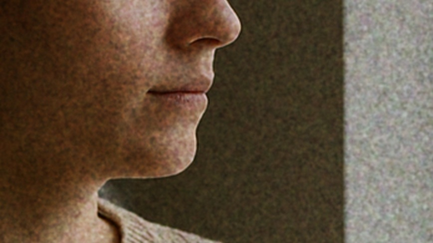
Grain Chroma Coarse · Overlay · 100%
Dust and scratches
Real alpha channels, so they composite at Normal. Every mark is pure white or pure black — never a muddy grey — and most of the frame is left completely untouched. Shown whole-frame and reduced.
Dust Light · 1.27% of the frame markedDust Heavy · 4.34% of the frame marked
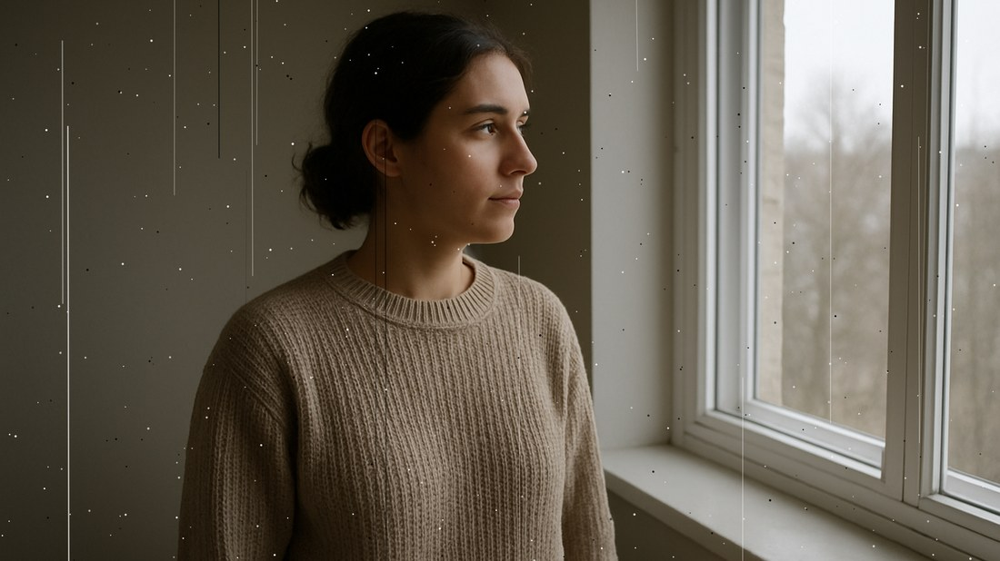
Scratches Light · 0.99% of the frame marked
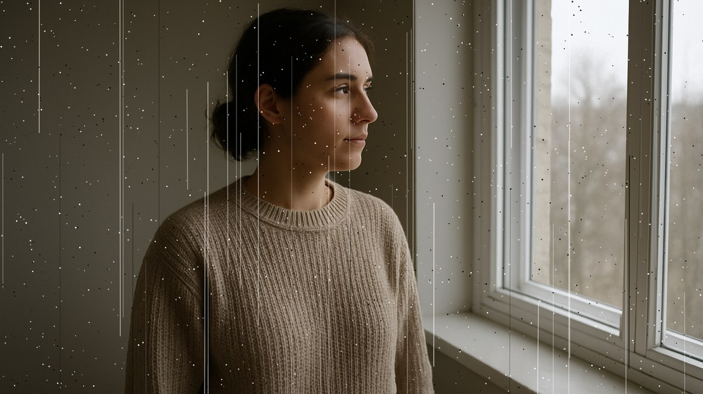
Scratches Heavy · 3.04% of the frame marked
Light leaks
Sums of anisotropic Gaussian fields on genuinely pure black, so Screen is an identity everywhere outside the leak. These are not photographs of real light leaks and are not presented as any. Shown whole-frame and reduced.
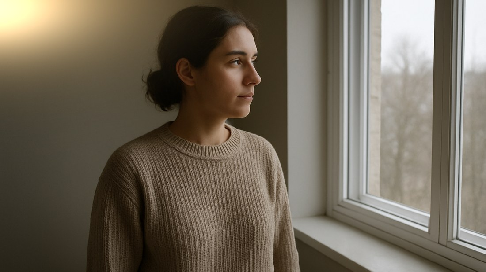
Leak Corner Warm · 63.2% of the frame pure black
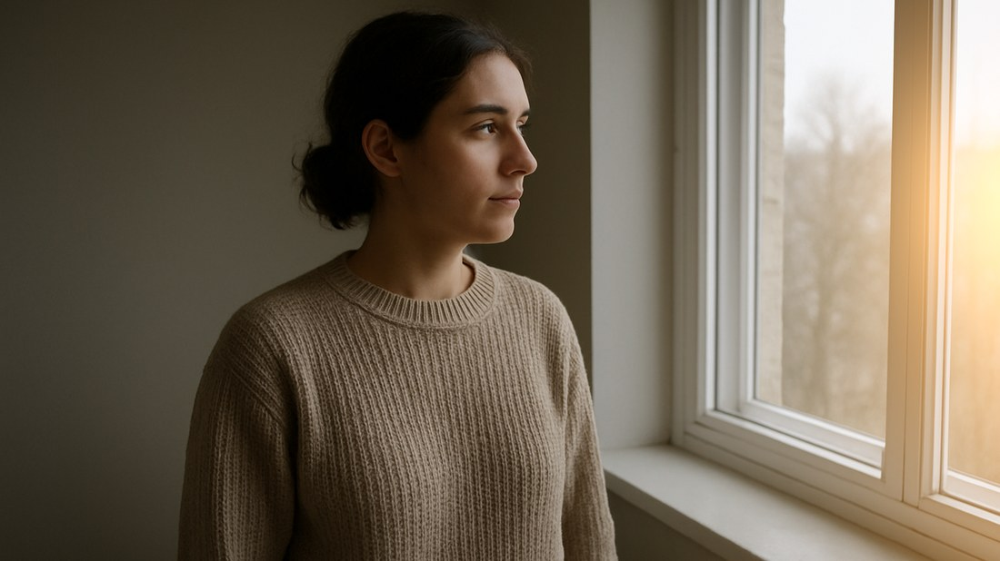
Leak Edge Amber · 53.9% of the frame pure black
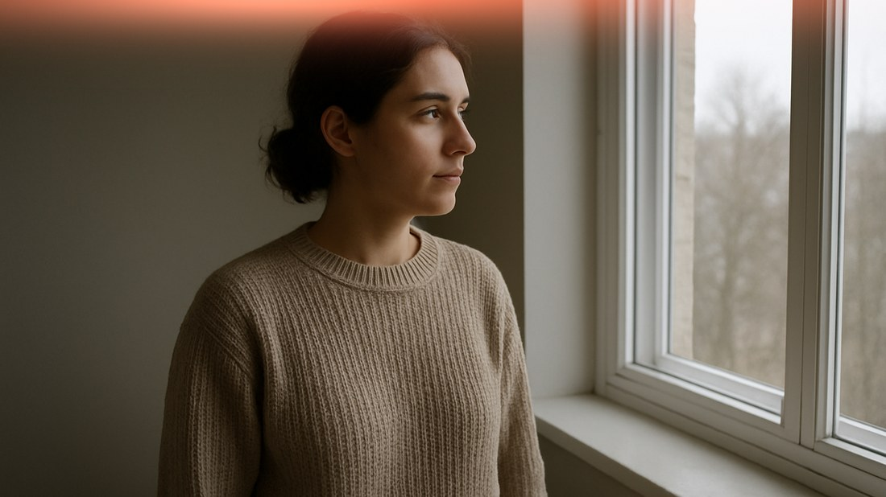
Leak Streak Red · 79.9% of the frame pure black
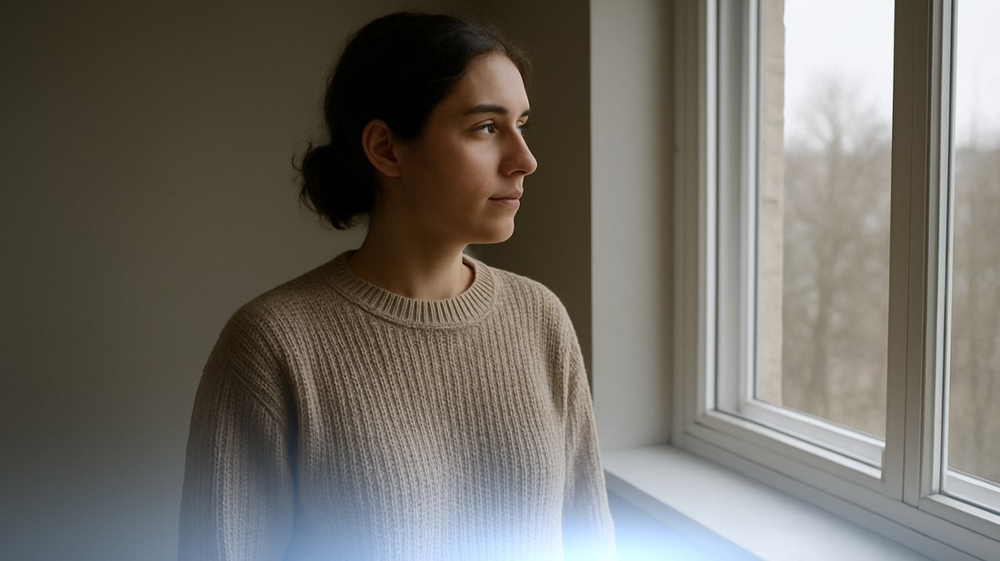
Leak Bloom Cool · 52.3% of the frame pure black
Vignettes
Pure black with a radial alpha ramp. Exactly transparent at the centre pixel, rising monotonically outward along every diagonal. Shown whole-frame and reduced.
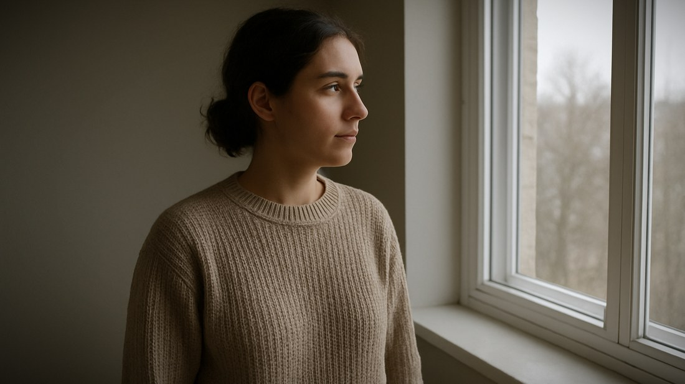
Vignette Soft · alpha 0 centre, 97 corners
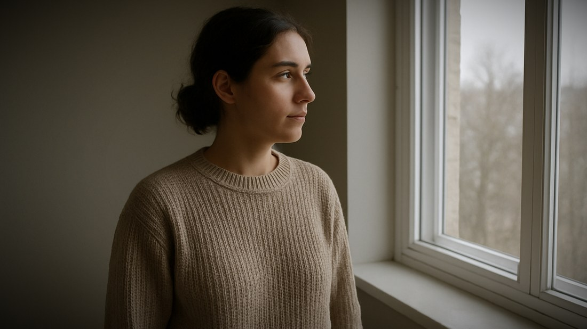
Vignette Medium · alpha 0 centre, 153 corners
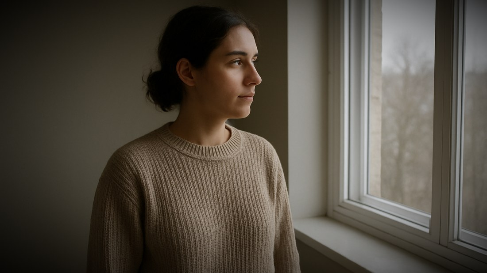
Vignette Hard · alpha 0 centre, 209 corners
Four grain fields out of every grain file
A grain plate is uncorrelated with its own mirror images.
Worst measured correlation between a plate and its own horizontal flip, vertical
flip or 180° rotation: 0.0040. So flipping gives you three more usable
fields that will not read as the same texture.
8 grain files, 32 distinct grain fields. The two
plates of each size are independent of each other too — worst measured
correlation between a pair, 0.0038.
What was checked before this shipped
Every plate 3840×2160 and 8-bit, in the colour mode its family
requires — single-channel grey for monochrome grain, RGB for chromatic grain
and leaks, RGBA for dust, scratches and vignettes.
Grain zero-mean on code 128 to within 0.05, within 2% of the sigma it
claims, and nothing clipped at 0 or 255 in any of the 8 plates — a
clipped grain field is a truncated distribution and it shows in the darks.
Grain size, measured. The autocorrelation radius is computed
from the written pixels rather than read off the blur setting.
The Overlay response curve itself, by compositing each plate over a grey
ramp, quantising to 8 bits as a renderer would, and comparing the measured standard
deviation against the prediction at seven levels.
Dust and scratch plates mark 1.27% to 4.34% of the frame and leave
the rest completely untouched, and every mark is pure white or pure black.
Light leaks sit on at least 52% genuinely pure black, so Screen is an
identity outside the leak, and each leak's measured brightness centroid really is
where its name puts it.
Vignettes are exactly transparent at the centre pixel, carry no colour of
their own, and rise monotonically outward along every diagonal.
188 assertions, all passing, 157,593,600 pixels examined.
What they will not do
These are still images, not video. Held across a clip, the grain does not
move. Real film grain changes every frame. If you want moving grain in one
click, this is not that pack. You can cut between plates, flip them for a fresh
field, or animate a small offset — but that is manual work, and it is better
said here than discovered later.
These have never been opened in Final Cut Pro. There is no Mac and no
copy of Final Cut Pro on the machine they were built on. PNG is an ordinary still
image format and these are valid 8-bit PNGs, which was checked — but "it
imports and composites correctly in Final Cut Pro" was not testable here and is not
claimed.
Procedural, not photographed. Filtered Gaussian noise, Gaussian light
fields, drawn specks and lines. Nothing is a scan of real film.
Nothing in the pack is AI-generated. The demonstration photograph on this
page is AI-generated and the person in it is not real. It is a test frame
and it is not in the download.
4K plates on a 1080p timeline read one step finer, because the plate is
being scaled to half size. Reach for Coarse where you would have used Medium.
19 plates, not 300. A small deliberate set. No support —
one-time download, sold as-is.
Get it
Film Grain and Texture Overlays for Final Cut Pro
— $8
19 PNG plates at
3840×2160, about 46 MB. No plugin, no installer, no account. Works in
any editor that imports a PNG and offers blend modes.